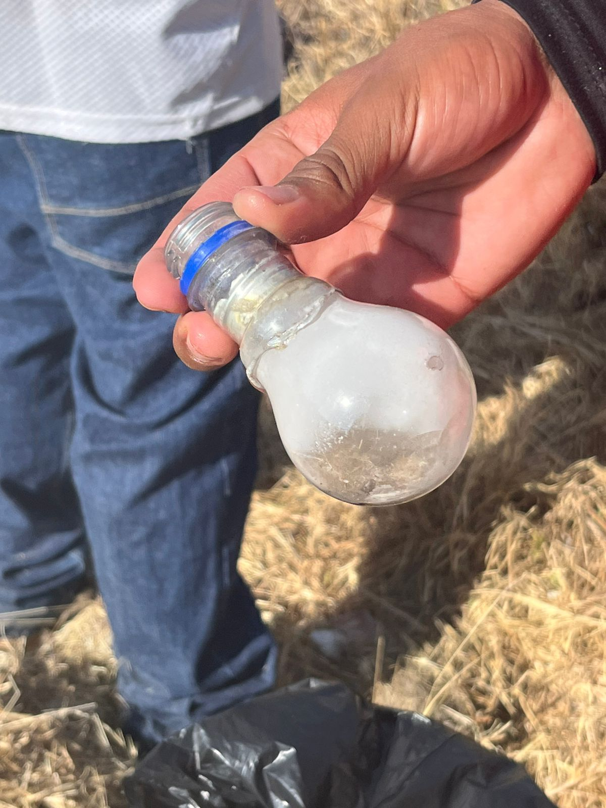
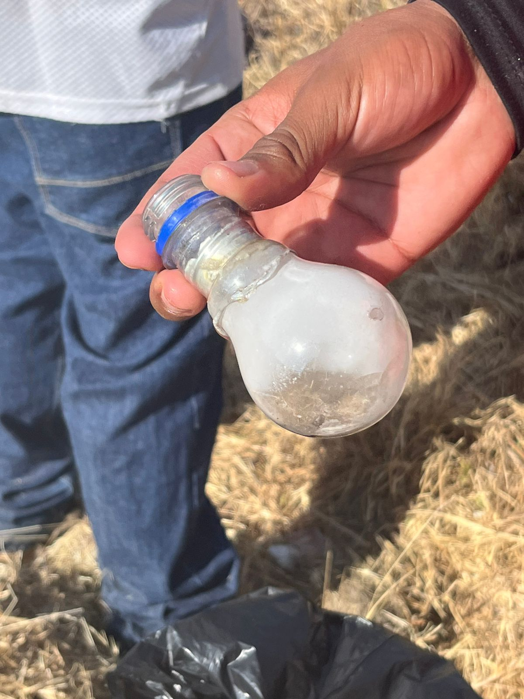

Bienvenido al Proyecto PAEC
En esta página encontrarás la organización completa del proyecto, sus actividades, su propósito educativo y el impacto generado en la comunidad.
Proceso del Proyecto PAEC
El Proyecto PAEC tiene como propósito mejorar y recuperar espacios públicos dentro de la comunidad. En nuestro caso, identificamos un área que se encontraba descuidada, sucia y sin mantenimiento. Como equipo Imparables, nos organizamos para realizar la limpieza del sitio, recoger desechos, retirar maleza y dejar el espacio en mejores condiciones para los vecinos.
Durante el proceso aprendimos a trabajar en equipo, planificar actividades, distribuir tareas y comprender la importancia del cuidado del entorno. También observamos que, cuando una comunidad participa en la mejora de su propio ambiente, se genera un impacto positivo tanto visual como social.
Sin embargo, mientras realizábamos el proyecto surgió un inconveniente: fuimos retirados del lugar debido a que el terreno se encuentra en litigio o en un proceso legal que impide que cualquier persona realice actividades allí. A pesar de esta situación, nuestro equipo logró cumplir los objetivos principales, ya que conseguimos:
- Identificar una problemática real en la comunidad.
- Organizar acciones para resolverla.
- Participar activamente en la limpieza del espacio.
- Generar conciencia sobre el valor de mantener áreas limpias y seguras.
- Documentar nuestra experiencia y los aprendizajes obtenidos.
Aunque no pudimos continuar debido al proceso legal del lugar, concluimos el proyecto con éxito, demostrando compromiso, iniciativa y responsabilidad ambiental. Como equipo Imparables, seguimos avanzando y dejando huella con cada acción que realizamos.
Galería Fotográfica
 


Avances del Proyecto
- ✔ Diagnóstico inicial completado
- ✔ Limpieza del área seleccionada
- ✔ Organización efectiva del equipo Imparables
- ✔ Documentación y registro del proceso
- ✔ Reflexión sobre la problemática comunitaria